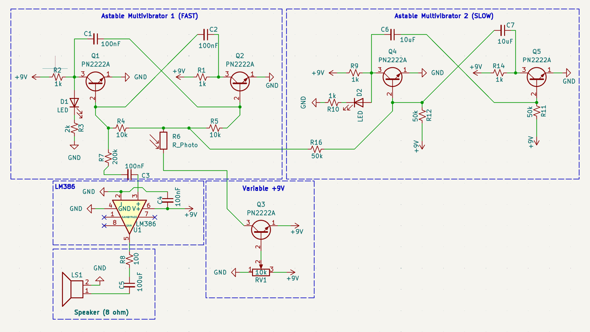
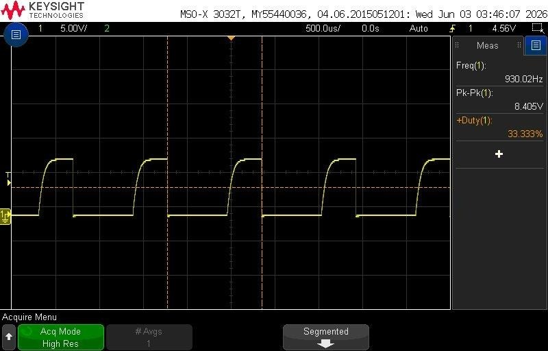
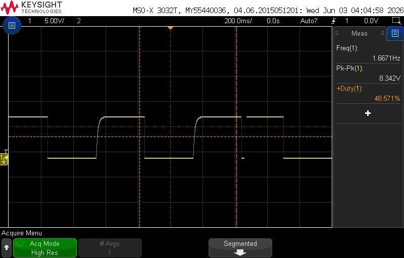
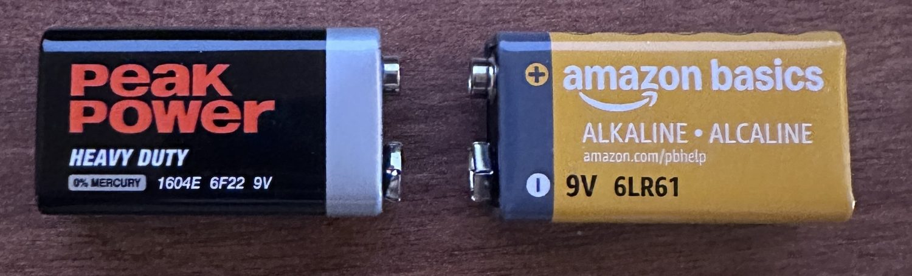

Analog Design · Audio · Discrete Transistors
Analog Synthesizer Built From Transistors

What it is
An analog synthesizer made out of transistors. It produces an audible tone, the pitch can be bent two different ways — with light and with a knob — and a second slow circuit sweeps the pitch on its own so it sounds like a siren. Everything runs from a single 9 V supply into a small speaker. There is no microcontroller anywhere in it.
The voice
The tone comes from an astable multivibrator: two transistors wired so each keeps switching the other off, producing a square wave. Frequency follows f ≈ 1/(1.38·R·C), which with 10 kΩ and 100 nF predicts around 725 Hz — and measured a little higher in practice, which is normal for this topology.
Two ways to bend the pitch
A photoresistor sits in the timing network. More light drops its resistance and the tone rises; cover it and the pitch falls.
The knob works differently — it changes the oscillator's supply voltage. A potentiometer sets a voltage, and a transistor follower copies that voltage while still being able to source real current. Without the follower the pot would sag under load and the pitch would wander; with it, the knob sets a stiff voltage and the oscillator tracks it cleanly.


Covering the sensor halved the frequency almost exactly, which is a satisfyingly clean confirmation that the light path controls the timing and not something incidental.
Sweeping the knob walked the tone from not oscillating at all, up through 277 Hz, 638 Hz and 1243 Hz as the supply rose toward 7.4 V — supply voltage controlling pitch exactly as the theory predicts.
Modulator and output
A second astable runs deliberately slow, using 10 µF capacitors, at a measured 1.67 Hz. It nudges the voice's timing up and down, which drags the pitch around and produces the warble. Each oscillator drives an LED so both are visible while running — which also made the modulator rate countable by eye before I put a scope on it.
Output goes through an LM386. The tone is AC-coupled in so only audio passes, and a series resistor on the output keeps the level sane — the raw square wave is large enough to clip the amplifier without it.
The batteries didn't behave

Running the identical circuit on two different 9 V batteries gave results that looked backwards. The one reading 8.2 V produced a slow 1.9 Hz warble; the one reading 7.3 V produced a much faster 7.6 Hz. Higher voltage should mean a faster modulator, not slower.
The explanation is internal resistance. A real battery has resistance inside it, so voltage sags under load — and a weaker battery sags more. The two cells didn't just differ in voltage, they differed in stiffness, and both readings were taken while the circuit was running, so each already included its own sag. The simple "more volts, faster" rule was comparing two things that weren't otherwise equal.
The clean way to test supply voltage in isolation is a bench supply that holds its output regardless of current draw. That the label on a battery describes only one of its two relevant properties was the most useful thing this project taught me.